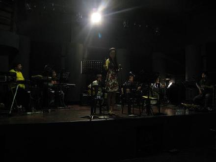
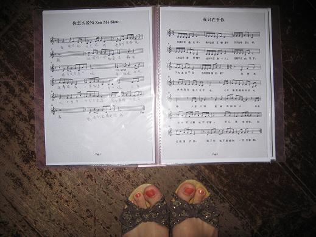
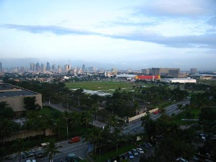

← 返回索引
｜ 黄龄新浪博客离线存档
马尼拉second day
2007-11-21 00:04
在马尼拉的第二天，一大早起床就被接去彩排的地方，头一次和菲律宾乐团一起合作，很兴奋，在上海的一些ＣＬＵＢ，就有很多很棒的菲律宾乐团表演．．．菲律宾人好像生来音乐天赋就很好，从小就玩音乐，所以每个人都很专业．．．就连排练的地方都是录音棚，整个排练过程在我不知道的情况已经被他们录下来，最后刻成ＣＤ送给我带回来听，自己听自己不足的地方．

这次参加一对夫妇40周年结婚纪念日,这对夫妇是华人,但长期在马尼拉..所以他们指定要听邓丽君的歌,难度很大,作为表演嘉宾,我压力还满大的,

我们住的菲律宾花园酒店就在马尼拉湾旁边...从窗口望出去能清楚的看到马尼拉湾...

← 返回全部文章索引